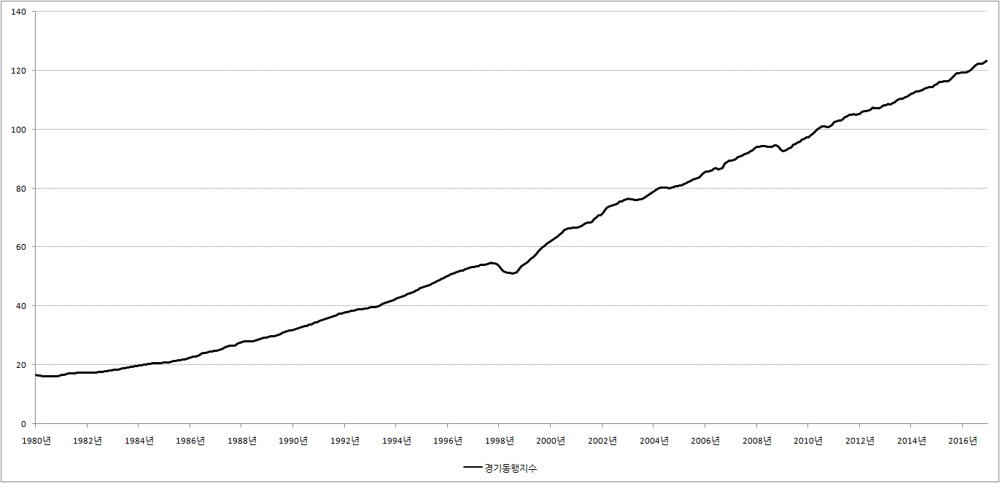
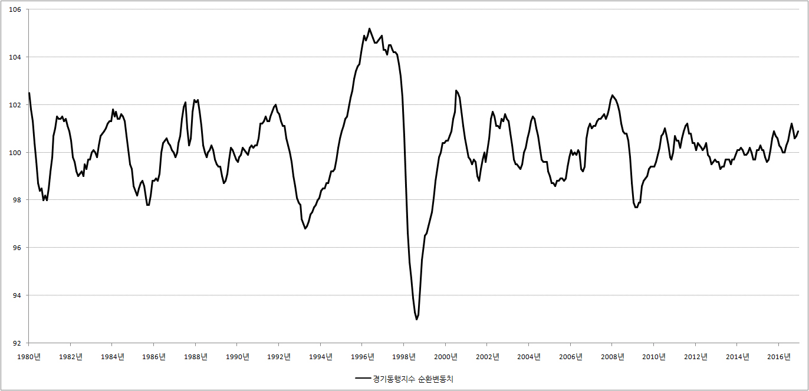

■ 경기동행지수
1.경기동행지수
지금 날씨가 얼마나 추운지, 또는 얼마나 따뜻하지 궁금하면 우리는 이것 저것 굳이 살펴 볼 필요가 없습니다. 딱 하나! 온도계만 보면 됩니다.
이 같은 원리가 경제에도 적용됩니다. 지금 한국 경제가 따뜻한 봄날인지, 아니면 차디찬 겨울인지 궁금하면 한국 경제의 온도계 경기동행지수를 살펴보면 됩니다.
경기동행지수는 통계청에서 제작한 하이테크놀로지 온도계인데 이 놈의 눈금만 살펴보면 한국 경제의 온도를 단번에 알 수 있습니다.
2. 경기동행지수의 제작원리
지금 한국 경제가 얼마나 잘 나가는지 궁금할 때 우리는 무엇을 하면 될까요? 답은 간단합니다. 당장 공단으로 가보면 됩니다. 공장의 기계가 24시간 숨 쉴 틈도 없이 돌아가고 있다면 한국 경제가 잘 나가는 것이 맞습니다. 똑똑한 사장님이 팔리지도 않는 물건을 24시간 찍어낼 이유는 없기 때문입니다.
하지만 뭔가 찝찝합니다. 좀 더 확신을 얻기 위해서 우리는 마트로 가 볼 필요가 있습니다. 만약 마트도 사람들로 인산인해를 이루고 있다면 이제 우리는 확신할 수 있습니다. 한국 경제가 봄날이라고 말입니다.
그래도 뭔가 찝찝합니다. 좀 더 확신을 얻기 위해 우리는 극장에도 가 보고, 놀이공원에도 가 봐야 합니다. 경제가 잘 나간다면 극장에도, 놀이공원에도 사람들이 붐빌 것이 확실하기 때문입니다.
그런데 문제가 있습니다. 이런 식으로 조사를 하면 그 끝을 알 수가 없습니다. 죽을 때까지 조사해도 답을 못 낼수 있습니다.
그래서 통계청 공무원 아저씨 아줌마들이 잔머리를 굴렸습니다. 한국 경제의 현실을 가장 잘 보여주는 국가대표 몇 개를 뽑아서 이들을 한국 경제의 온도를 측정하는 온도계의 부품으로 사용하기로 한 것입니다. 쉽게 말해서 과거에 비해 공장에서 물건이 얼마나 많이 생산되고 있는지(광공업생산지수), 마트에 사람이 얼마나 많은지(소매판매액지수), 영화관에 사람이 얼마나 붐비는지(서비스업생산지수) 조사한 후 그 값을 평균 내서 만든 것이 바로 경기동행지수입니다.
3.경기동행지수의 구성지표
경기동행지수라는 이름의 온도계를 만드는데 사용되는 부품은 모두 7개입니다. 이들의 이름을 하나하나 불러보면 다음과 같습니다.
광공업생산지수, 소매판매액지수, 서비스업생산지수, 건설기성액, 내수출하지수, 수입액, 비농림어업취업자수.
뉘 집 자식인지, 무엇을 하며 먹고 사는지 이름에서 대충 견적이 나오지만 지금은 과감하게 얼렁뚱당 넘어가겠습니다. 이들에 대한 자세한 이야기는 시간이 날 때마다 말씀 드리겠습니다.
4.경기동행지수의 해석
경기동행지수를 해석하는 방법은 온도계와 똑 같습니다. 경기동행지수의 눈금이 상승하면 그만큼 지금 현재 한국 경제가 잘 나간다는 이야기고, 경기동행지수의 눈금이 하락하면 한국 경제가 그만큼 어렵다는 이야기가 됩니다.
그런다면 경기동행지수는 지금 어떤 모습을 보이고 있을까요? 그 자태를 한번 살펴보시기 바랍니다.
※ 경기동행지수 그래프

{kind=link}
헉! 그래프가 위로 올가가는 것이... 뭔가 좋아지는 것 같기는 한데 그 의미를 알 수가 없습니다.
그래서 통계청 아저씨 아줌마들이 멋진 방법을 하나 생각했습니다. 위의 그래프를 보기 좋게 포토샵해서 ‘경기동행지수 순환변동치’라는 것을 만들었습니다.
※ 경기동행지수 순환변동치

{kind=link}
한결 보기가 쉽습니다. 그리고 한국경제의 평지풍파를 한눈에 알 수 있습니다. 1997년 IMF위기 당시의 지옥같은 순간이 그래프에 너무나 잘 나타나 있습니다. 너무나 고마운 ‘경기동행지수 순환변동치’이지만 자세한 제작 원리는 알 필요가 없습니다. 그냥 우리가 쉽게 그래프를 볼 수 있게 나올 곳은 확 나오게 하고, 들어갈 곳은 확 들어가게 포토샾을 한 것이 라고 생각하시면 됩니다.
5.경기동행지수 조회 사이트
■ 통계청 : 경기동행지수는 통계청에서 제작한 경제의 온도계입니다. 따라서 경기동행지수가 가리키는 한국 경제의 온도가 궁금하면 통계청에 접속하시면 됩니다.
통계청에서 경기동행지수를 조회하는 경로는 다음과 같습니다.
통계청 국가통계포탈 → 주제별통계 → 경기·기업경영 → 경기 → 경기종합지수 → 경기동행지수
■ 한국은행 : 경제공부를 처음 시작한 분이 통계청에서 경기동행지수를 조회하는 것은 좀 많이 어렵습니다. 따라서 머리 아프고 복잡한 것이 싫은 분은 한국은행을 이용하시면 됩니다. 한국은행에서 경기동행지수를 조회하는 방법은 다음과 같습니다.
한국은행 경제통계시스템 → 15.산업 및 고용 → 15.1.산업일반 → 15.10.4.경기종합지수 → 경기동행지수